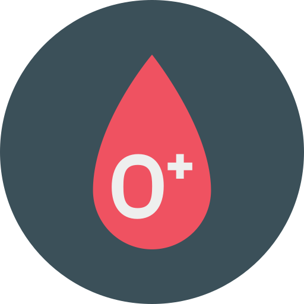
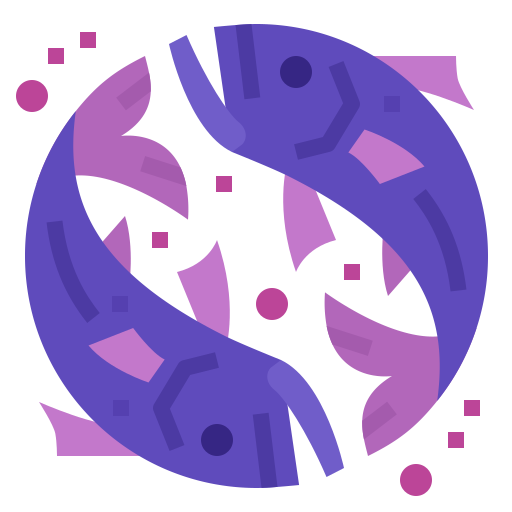

INFOMATION

|
이름 | 배예진 (BAE, YEJIN) |
|---|---|---|
| 생년월일 | 1997년 03월 13일 | |
| 취미 | 유튜브 시청, 산책, 웹툰 보기 | |
| 전공 | 컴퓨터공학 (Computer Engineering) |
MOTTO
"어제보다 더 나은 내가 되자!" |
||
|
세상에 모든 것이 완벽한 사람은 없습니다. 누구나 한가지씩은 부족한 점이 있고, 약한 부분이 있고, 때문에 실수를 하기도하죠. 저도 부족함이 많은 사람이라 수 많은 실수를 하고, 잘못된 선택을 후회하고, 반복되는 실패에 좌절하기도 합니다. 하지만, 그럼에도 항상 자신을 돌아보고 어제보다 더 나은 내가 되기위해 다시 일어서고, 도전하고, 노력하고 있습니다. |
||
|
발전
|
신뢰
|
도전
|
BLOODTYPE
|  |
|
|
* 혈액형별 성격은 과학적으로 증명된 바가 없습니다. |
CONSTELLATION
|  | 물고기자리 (pisces / 02.19 ~ 03.20) |
|---|---|
|
물고기 자리의 사람들은 굉장히 예민한 감수성의 소유자들이 많다. 야심이 강하며 정의감이 넘치는것이 특징인데, 마음보다 몸이 먼저 움직이는 경우가 많아 부주의한 사람으로 오해받는 경우가 많다. 자기자신에 대한 사랑이 강하기 때문에 다른사람들을 내려다 보는 오만함도 특징중 하나다. 물고기 자리의 사람에게 안정감 있는 상황과 칭찬을 아끼지 않는 다면 충직한 동료로 바뀔 수 있다. 하지만 감정적인 성격때문에 남들 위에 올라가는 리더 적인 자질이 부족하며 2인자로는 최고의 성과를 낼수 있는 역활을 해낸다. 자기자신에 대한 몽상과 다양한 호기심이 가득하기 때문에 약간 산만한게 특징 이지만, 자기가 원하고 빠져든일 에는 누구 보다 열정적이며 엄청난 집중력을 보여준다. 친해지게 되면 자신을 다 던져서라도 친구의 어려움을 도와주기위해 달려드는 엄청난 의리파다. 감정에 충실하게 살기 때문에 앞을 내다보는 행동을 잘 하지 못해서, 주위에서 제대로된 평가를 받지못하는 경우가 많다. 직감,육감이나 영감 등 민감한 센서가 발달하여 때때로는 깜짝놀랄 만한 발언을 하며 창의적인아이디어를 내기도한다. 희생을 하거나 남들을 도와주는것을 스스로 당연하다고 여기는 특징을 가지고 있다. |
|
|
* 별자리별 성격은 과학적으로 증명된 바가 없습니다. 재미로만 즐겨주세요 :-) |
MBTI
| 논리적인 사색가 (INTP-A/INTP-T) | ||
|---|---|---|
|
사색가형은 전체 인구의 3% 정도를 차지하는 꽤 흔치 않은 성격 유형으로, 이는 그들 자신도 매우 반기는 일입니다. 왜냐하면, 사색가형 사람보다 '평범함'을 거부하는 이들이 없기 때문입니다. 이 유형의 사람들은 그들이 가진 독창성과 창의력, 그리고 그들만의 독특한 관점과 왕성한 지적 호기 심에 나름의 자부심을 가지고 있습니다. 보통 철학자나 사색가, 혹은 몽상에 빠진 천재 교수로도 많이 알려진 이들은 역사적으로 수많은 과학적 발전을 이끌어 냈습니다.
이들은 사전이나 사룸의 어떠한 일련의 연속성에 관심이 많으며, 사람들의 연행
에 불일치되는 부분을 집어내 트집 잡는 것을 즐기는데, 이는 거의 취미 수준에 가까
울 정도입니다. 떄문에 이들에게 거짓말은 하지 않는 것이 좋습니다. 또 한가지 아이
러니한 점은 이들의 얘리를 곧이곧대로 듣지 말고 잘 새겨 들어야 한다는 것입니다.
이는 이들이 솔직하지 않아서가 아니라 아직 채 명확히 규명되지 않은 생각이나
이론에 대하여 얘기하는 경향이 있기 때문입니다. 이들은 상대방을 실질적인 대화 상대로
보는 것이 아니라 그들의 생각이나 이론을 펴기 위한 하나의 대상으로 여깁니다.
|
||